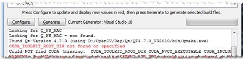
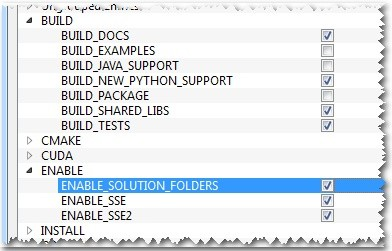

The description here was tested on Windows 7 SP1. Nevertheless, it should also work on any other relatively modern version of Windows OS. If you encounter errors after following the steps described below, feel free to contact us via our OpenCV Q&A forum. We'll do our best to help you out.
Drink a coffee or two... opencv is ready : That's all!
Next time you run this script, opencv and opencv_contrib will be updated and rebuild
Installation by Making Your Own Libraries from the Source Files
You may find the content of this tutorial also inside the following videos: Part 1 and Part 2, hosted on YouTube.
warning
These videos above are long-obsolete and contain inaccurate information. Be careful, since solutions described in those videos are no longer supported and may even break your install.
If you are building your own libraries you can take the source files from our Git repository.
Building the OpenCV library from scratch requires a couple of tools installed beforehand:
An IDE of choice (preferably), or just a CC++ compiler that will actually make the binary files. Here we will use the Microsoft Visual Studio. However, you can use any other IDE that has a valid CC++ compiler.
CMake, which is a neat tool to make the project files (for your chosen IDE) from the OpenCV source files. It will also allow an easy configuration of the OpenCV build files, in order to make binary files that fits exactly to your needs.
Git to acquire the OpenCV source files. A good tool for this is TortoiseGit. Alternatively, you can just download an archived version of the source files from our page on Sourceforge
OpenCV may come in multiple flavors. There is a "core" section that will work on its own. Nevertheless, there is a couple of tools, libraries made by 3rd parties that offer services of which the OpenCV may take advantage. These will improve its capabilities in many ways. In order to use any of them, you need to download and install them on your system.
The Python libraries are required to build the Python interface of OpenCV. For now use the version 2.7.{x}. This is also a must if you want to build the OpenCV documentation.
Numpy is a scientific computing package for Python. Required for the Python interface.
Intel Threading Building Blocks (TBB) is used inside OpenCV for parallel code snippets. Using this will make sure that the OpenCV library will take advantage of all the cores you have in your system's CPU.
Intel Integrated Performance Primitives (IPP) may be used to improve the performance of color conversion, Haar training and DFT functions of the OpenCV library. Watch out, since this is not a free service.
OpenCV offers a somewhat fancier and more useful graphical user interface, than the default one by using the Qt framework. For a quick overview of what this has to offer, look into the documentations highgui module, under the Qt New Functions section. Version 4.6 or later of the framework is required.
Eigen is a C++ template library for linear algebra.
The latest CUDA Toolkit will allow you to use the power lying inside your GPU. This will drastically improve performance for some algorithms (e.g the HOG descriptor). Getting more and more of our algorithms to work on the GPUs is a constant effort of the OpenCV team.
OpenEXR source files are required for the library to work with this high dynamic range (HDR) image file format.
The OpenNI Framework contains a set of open source APIs that provide support for natural interaction with devices via methods such as voice command recognition, hand gestures, and body motion tracking. Prebuilt binaries can be found here. The source code of OpenNI and OpenNI2 are also available on Github.
Doxygen is a documentation generator and is the tool that will actually create the OpenCV documentation.
Now we will describe the steps to follow for a full build (using all the above frameworks, tools and libraries). If you do not need the support for some of these, you can just freely skip this section.
Building the library
Make sure you have a working IDE with a valid compiler. In case of the Microsoft Visual Studio just install it and make sure it starts up.
Install CMake. Simply follow the wizard, no need to add it to the path. The default install options are OK.
Download and install an up-to-date version of msysgit from its official site. There is also the portable version, which you need only to unpack to get access to the console version of Git. Supposing that for some of us it could be quite enough.
Install TortoiseGit. Choose the 32 or 64 bit version according to the type of OS you work in. While installing, locate your msysgit (if it does not do that automatically). Follow the wizard – the default options are OK for the most part.
Choose a directory in your file system, where you will download the OpenCV libraries to. I recommend creating a new one that has short path and no special characters in it, for example D:/OpenCV. For this tutorial, I will suggest you do so. If you use your own path and know, what you are doing – it is OK.
Clone the repository to the selected directory. After clicking Clone button, a window will appear where you can select from what repository you want to download source files (https://github.com/opencv/opencv.git) and to what directory (D:/OpenCV).
Push the OK button and be patient as the repository is quite a heavy download. It will take some time depending on your Internet connection.
In this section, I will cover installing the 3rd party libraries.
Download the Python libraries and install it with the default options. You will need a couple other python extensions. Luckily installing all these may be automated by a nice tool called Setuptools. Download and install again.
The easiest way to install Numpy is to just download its binaries from the sourceforge page. Make sure your download and install exactly the binary for your python version (so for version 2.7).
For the CUDA you need again two modules: the latest CUDA Toolkit and the CUDA Tools SDK. Download and install both of them with a complete option by using the 32 or 64 bit setups according to your OS.
In case of the Qt framework you need to build yourself the binary files (unless you use the Microsoft Visual Studio 2008 with 32 bit compiler). To do this go to the Qt Downloads page. Download the source files (not the installers!!!):
Extract it into a nice and short named directory like D:/OpenCV/dep/qt/ . Then you need to build it. Start up a VisualStudioCommandPrompt (2010) by using the start menu search (or navigate through the start menu All Programs –> Microsoft Visual Studio 2010 –> Visual Studio Tools –> Visual Studio Command Prompt (2010)).
Now navigate to the extracted folder and enter inside it by using this console window. You should have a folder containing files like Install, Make and so on. Use the dir command to list files inside your current directory. Once arrived at this directory enter the following command:
Also, add the built binary files path to the system path by using the PathEditor. In our case this is D:/OpenCV/dep/qt/qt-everywhere-opensource-src-4.7.3/bin.
Note
If you plan on doing Qt application development you can also install at this point the Qt Visual Studio Add-in. After this you can make and build Qt applications without using the Qt Creator. Everything is nicely integrated into Visual Studio.
Now start the CMake (cmake-gui). You may again enter it in the start menu search or get it from the All Programs –> CMake 2.8 –> CMake (cmake-gui). First, select the directory for the source files of the OpenCV library (1). Then, specify a directory where you will build the binary files for OpenCV (2).
Press the Configure button to specify the compiler (and IDE) you want to use. Note that in case you can choose between different compilers for making either 64 bit or 32 bit libraries. Select the one you use in your application development.
CMake will start out and based on your system variables will try to automatically locate as many packages as possible. You can modify the packages to use for the build in the WITH –> WITH_X menu points (where X is the package abbreviation). Here are a list of current packages you can turn on or off:
Select all the packages you want to use and press again the Configure button. For an easier overview of the build options make sure the Grouped option under the binary directory selection is turned on. For some of the packages CMake may not find all of the required files or directories. In case of these, CMake will throw an error in its output window (located at the bottom of the GUI) and set its field values to not found constants. For example:

For these you need to manually set the queried directories or files path. After this press again the Configure button to see if the value entered by you was accepted or not. Do this until all entries are good and you cannot see errors in the field/value or the output part of the GUI. Now I want to emphasize an option that you will definitely love: ENABLE –> ENABLE_SOLUTION_FOLDERS. OpenCV will create many-many projects and turning this option will make sure that they are categorized inside directories in the Solution Explorer. It is a must have feature, if you ask me.

Furthermore, you need to select what part of OpenCV you want to build.
BUILD_DOCS -> It creates two projects for building the documentation of OpenCV (there will be a separate project for building the HTML and the PDF files). Note that these are not built together with the solution. You need to make an explicit build project command on these to do so.
BUILD_EXAMPLES -> OpenCV comes with many example applications from which you may learn most of the libraries capabilities. This will also come handy to easily try out if OpenCV is fully functional on your computer.
BUILD_PACKAGE -> Prior to version 2.3 with this you could build a project that will build an OpenCV installer. With this, you can easily install your OpenCV flavor on other systems. For the latest source files of OpenCV, it generates a new project that simply creates a zip archive with OpenCV sources.
BUILD_SHARED_LIBS -> With this you can control to build DLL files (when turned on) or static library files (*.lib) otherwise.
BUILD_TESTS -> Each module of OpenCV has a test project assigned to it. Building these test projects is also a good way to try out, that the modules work just as expected on your system too.
BUILD_PERF_TESTS -> There are also performance tests for many OpenCV functions. If you are concerned about performance, build them and run.
BUILD_opencv_python -> Self-explanatory. Create the binaries to use OpenCV from the Python language.
BUILD_opencv_world -> Generate a single "opencv_world" binary (a shared or static library, depending on BUILD_SHARED_LIBS) including all the modules instead of a collection of separate binaries, one binary per module.
Press again the Configure button and ensure no errors are reported. If this is the case, you can tell CMake to create the project files by pushing the Generate button. Go to the build directory and open the created OpenCV solution. Depending on just how much of the above options you have selected the solution may contain quite a lot of projects so be tolerant on the IDE at the startup. Now you need to build both the Release and the Debug binaries. Use the drop-down menu on your IDE to change to another of these after building for one of them.
In the end, you can observe the built binary files inside the bin directory:
For the documentation, you need to explicitly issue the build commands on the doxygen project for the HTML documentation. It will call Doxygen to do all the hard work. You can find the generated documentation inside the build/doc/doxygen/html.
To collect the header and the binary files, that you will use during your own projects, into a separate directory (similarly to how the pre-built binaries ship) you need to explicitly build the Install project.
This will create an Install directory inside the Build one collecting all the built binaries into a single place. Use this only after you built both the Release and Debug versions.
To test your build just go into the Build/bin/Debug or Build/bin/Release directory and start a couple of applications like the contours.exe. If they run, you are done. Otherwise, something definitely went awfully wrong. In this case you should contact us at our Q&A forum. If everything is okay, the contours.exe output should resemble the following image (if built with Qt support):
Note
If you use the GPU module (CUDA libraries), make sure you also upgrade to the latest drivers of your GPU. Error messages containing invalid entries in (or cannot find) the nvcuda.dll are caused mostly by old video card drivers. For testing the GPU (if built) run the performance_gpu.exe sample application.
Set the OpenCV environment variable and add it to the systems path
First we set an environment variable to make easier our work. This will hold the build directory of our OpenCV library that we use in our projects. Start up a command window and enter:
1 setx -m OPENCV_DIR D:\OpenCV\Build\x86\vc11 (suggested for Visual Studio 2012 - 32 bit Windows)
2 setx -m OPENCV_DIR D:\OpenCV\Build\x64\vc11 (suggested for Visual Studio 2012 - 64 bit Windows)
3
4 setx -m OPENCV_DIR D:\OpenCV\Build\x86\vc12 (suggested for Visual Studio 2013 - 32 bit Windows)
5 setx -m OPENCV_DIR D:\OpenCV\Build\x64\vc12 (suggested for Visual Studio 2013 - 64 bit Windows)
6
7 setx -m OPENCV_DIR D:\OpenCV\Build\x64\vc14 (suggested for Visual Studio 2015 - 64 bit Windows)
Here the directory is where you have your OpenCV binaries (extracted or built). You can have different platform (e.g. x64 instead of x86) or compiler type, so substitute appropriate value. Inside this, you should have two folders called lib and bin. The -m should be added if you wish to make the settings computer wise, instead of user wise.
If you built static libraries then you are done. Otherwise, you need to add the bin folders path to the systems path. This is because you will use the OpenCV library in form of *"Dynamic-link
libraries"* (also known as DLL). Inside these are stored all the algorithms and information the OpenCV library contains. The operating system will load them only on demand, during runtime. However, to do this the operating system needs to know where they are. The systems PATH contains a list of folders where DLLs can be found. Add the OpenCV library path to this and the OS will know where to look if he ever needs the OpenCV binaries. Otherwise, you will need to copy the used DLLs right beside the applications executable file (exe) for the OS to find it, which is highly unpleasant if you work on many projects. To do this start up again the PathEditor and add the following new entry (right click in the application to bring up the menu):
1 %OPENCV_DIR%\bin
Save it to the registry and you are done. If you ever change the location of your build directories or want to try out your application with a different build, all you will need to do is to update the OPENCV_DIR variable via the setx command inside a command window.


 1.8.11
1.8.11